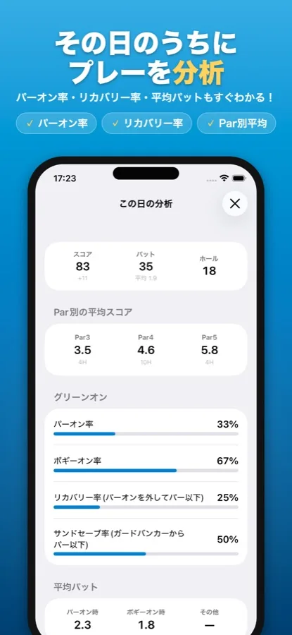
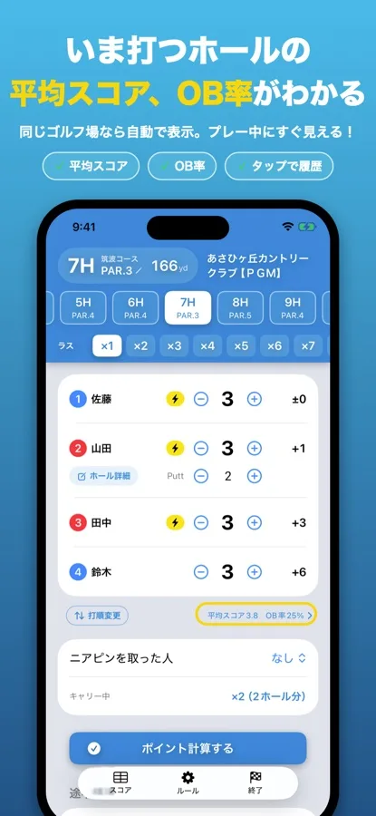
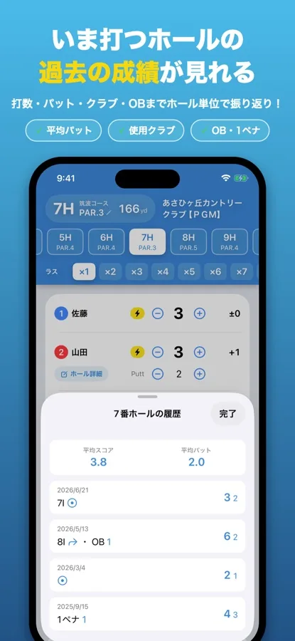

ゴルフの「ボギーオン率」とは
SQORE編集部 ｜ 2026年8月14日更新
ボギーオン率は、ボギーで上がれる状態でグリーンに乗った割合です。パーオン率ばかり気にしている人が多いのですが、100前後のアマチュアが見るべきなのはこちらです。パーオン率は数字が小さすぎて、良くなっても悪くなっても動きが読めないためです。目安は7割で80台、5割で90台。この記事では、その理由と一緒に見るべき指標をまとめます。
ボギーオンとは
ボギーオンはパーオンより1打多くグリーンに乗ることです。ホールごとに言い換えるとこうなります。
| パーオン | ボギーオン | |
|---|---|---|
| PAR3（ショート） | 1打目でオン | 2打目でオン |
| PAR4（ミドル） | 2打目でオン | 3打目でオン |
| PAR5（ロング） | 3打目でオン | 4打目でオン |
どちらも「2パットで上がれる位置に乗った」という意味です。パーオンなら2パットでパー、ボギーオンなら2パットでボギーになります。
なぜパーオン率より先に見るべきなのか
理由はアマチュアのパーオン率が低すぎて、指標として使えないからです。
| レベル | パーオン率の目安 | 18ホール中 |
|---|---|---|
| プロ（上位） | 7割前後 | 約13ホール |
| プロ（100位前後） | 5割強 | 約9ホール |
| シングル・70台 | 4〜5割 | 7〜9ホール |
| 80台 | 2.5〜4割 | 4〜7ホール |
| 90台 | 1.5〜2.5割 | 3〜4ホール |
| 100前後 | 1〜2割 | 2〜4ホール |
100前後の人のパーオンは18ホールで2〜4回。1回増えただけで数字が5%以上動いてしまうので、上達したのか、たまたま良かったのかが分かりません。母数が小さすぎるのです。
ボギーオンなら回数が多いぶん、数字が安定します。しかも狙いを「ボギーオン」に下げると、無理な攻めが減って大叩きが消えます。パー4で2オンを狙って池やOBに入れるより、3打でグリーンに乗せて2パットのボギーで上がるほうが、結果的にスコアはまとまります。
この数字は媒体によってばらつきがあります（「1〜2割」「10〜20%」「20%弱」など）。統一された調査があるわけではないので、目安として捉えてください。
スコア別のボギーオン率の目安
よく使われる目安
ボギーオン以下が7割を超えれば80台
ボギーオン以下が5割を超えれば90台
18ホールに直すと、7割は約13ホール、5割は9ホールです。
「ボギーオン以下」という言い方に注意してください。これはパーオンとボギーオンを合わせた数です。パーオンできたホールも当然「ボギーで上がれる位置」に乗っているので、数に入ります。
つまり90台を目指すなら、18ホール中9ホールで「パーオンかボギーオン」に乗せるのが目標になります。残り9ホールは乗らなくてもいい、と考えると急に現実的に見えてきます。
一緒に見ておきたい3つ
ボギーオン率だけでは「乗せたあと」が分かりません。次の3つと合わせて見ると、どこで損しているかがはっきりします。
| 指標 | 意味 | 分かること |
|---|---|---|
| リカバリー率 | パーオンを外したホールのうち、パー以下で上がれた割合 | 寄せとパットでどれだけ取り返せているか |
| サンドセーブ率 | ガードバンカーに入れたホールを、パー以下で上がれた割合 | バンカーが本当に苦手なのか |
| 平均パット （オン種別で分ける） | パーオン時とボギーオン時を分けて数えた平均パット数 | 乗る位置が悪いのか、パットが悪いのか |
平均パットは分けて見ないと意味がない
ラウンド全体の平均パットが32でも、中身は2通りあります。パーオン時の平均パットが多いなら、乗ってはいるが遠いところに乗っている（＝アイアンの距離感）。ボギーオン時の平均パットが多いなら、寄せがピンに絡んでいない（＝アプローチ）。原因がまったく違うのに、合算すると同じ「32パット」に見えてしまいます。
SQOREでの見方
記録しておけば、その日のうちに全部出る
iPhoneアプリのSQOREは、ラウンド中にパット数と詳細（ティーショットの方向・OB・ガードバンカーなど）を入れておくと、パーオン率・ボギーオン率・リカバリー率・サンドセーブ率を自動で計算します。平均パットもパーオン時とボギーオン時に分けて出ます。
Par3・Par4・Par5別の平均スコアも同時に出るので、どのホールで損しているかがそのまま見えます。

SQOREでの数え方（目安と比べるときの注意）
SQOREはパーオン率とボギーオン率を別々に出します。パーオンしたホールはパーオン率に入り、ボギーオン率には入りません。
一方、上で紹介した「7割で80台・5割で90台」の目安は「ボギーオン以下」＝パーオンとボギーオンの合計です。比べるときは、アプリのパーオン率とボギーオン率を足してください。
例: パーオン率15% ＋ ボギーオン率40% ＝ 55% → 目安の「5割超」を満たしているので90台が狙える水準、という読み方になります。
いま立っているホールで、前回どう打ったかが見られる
過去のティーショット・OB・スコアが、打つ前に出る
分析はラウンド後に見るものですが、SQOREはプレー中に、いま立っているホールの自分の過去が見られます。同じゴルフ場を回ると、スコア画面にそのホールの平均スコアとOB率が出て、タップすると1ラウンドずつ遡れます。
そこに並ぶのは数字だけではありません。そのとき使ったクラブ、ティーショットがどっちに飛んだか（キープ／左／右／オーバー／ショート）、OBやペナルティがあったか、打数とパット数——全部です。
「前回このホールはドライバーで右にOBを打っている」と分かれば、いま何を持つべきかは決まります。乗らないホールを無理に狙わずボギーオンでまとめる、という判断を、打つ前に、根拠を持ってできるわけです。
設定は不要で、ラウンドを保存していけば自動で貯まります（履歴の閲覧はプレミアム）。ティーショットの方向やクラブは詳細入力で記録した日のぶんが出ます。


よくある質問
ボギーオンとは？
ボギーで上がれる状態でグリーンに乗ることです。パー4なら3打目、パー5なら4打目、パー3なら2打目でオンした状態を指します。
ボギーオン率の目安は？
「ボギーオン以下」（パーオンとボギーオンの合計）が7割超で80台、5割超で90台が狙えると言われます。18ホールなら約13ホールと9ホールです。
パーオン率とどちらを見るべき？
100前後ならボギーオン率です。パーオンは18ホールで2〜4回しかないので、母数が小さすぎて上達が読み取れません。
ボギーオン率はどうやって数える？
各ホールで「打数 − パット数」を出し、それがパーより1少ない数ならボギーオンです。パー4なら打数−パット＝3。手で数えるのは大変なので、パット数を記録できるアプリに任せるのが現実的です。
パット数を入れていないと出ない？
出ません。ボギーオン率もパーオン率も「打数 − パット数」で判定するため、パット数の記録が必要です。SQOREもパット数を入れたホールだけを対象に計算します。